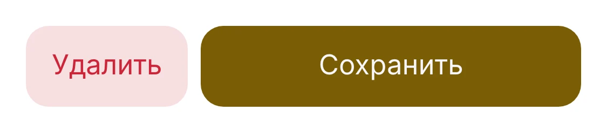
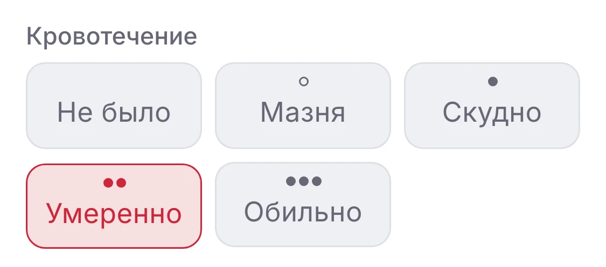
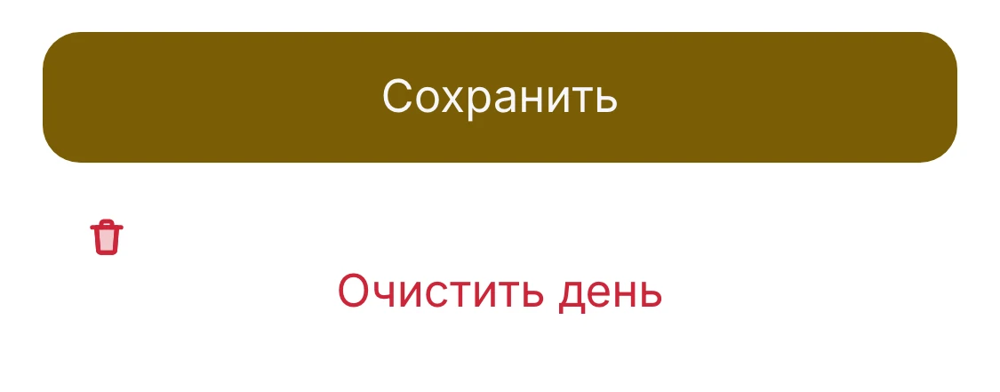
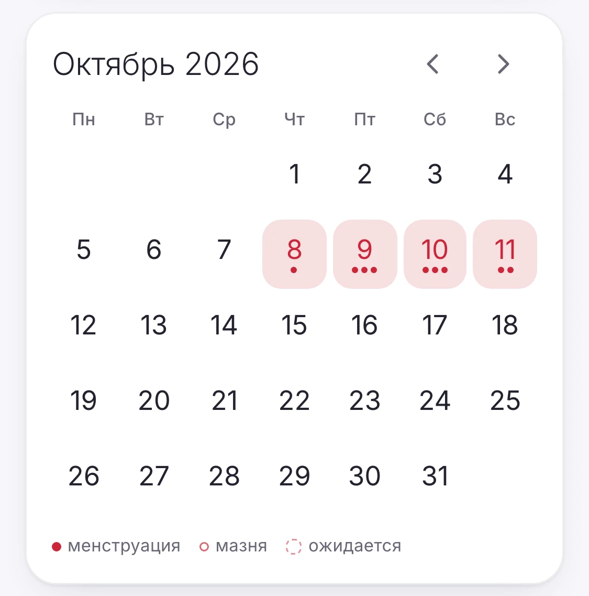
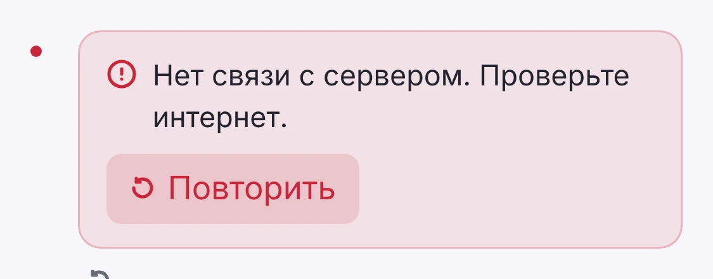

Светлая — как сейчас, L 0.550
Шторка задачи: «Удалить» (подложка /15 на белом) · 4.27 ✗

Отметка дня: выбранный уровень (/15 на белом) · 4.27 ✗

Отметка дня: «Очистить день» — красный без подложки · 5.40

Календарь цикла: дни кровотечения (/15 на карточке) · 4.27 ✗

ИИ: ошибка ответа, «Повторить» (подложка на подложке) · 3.45 ✗
